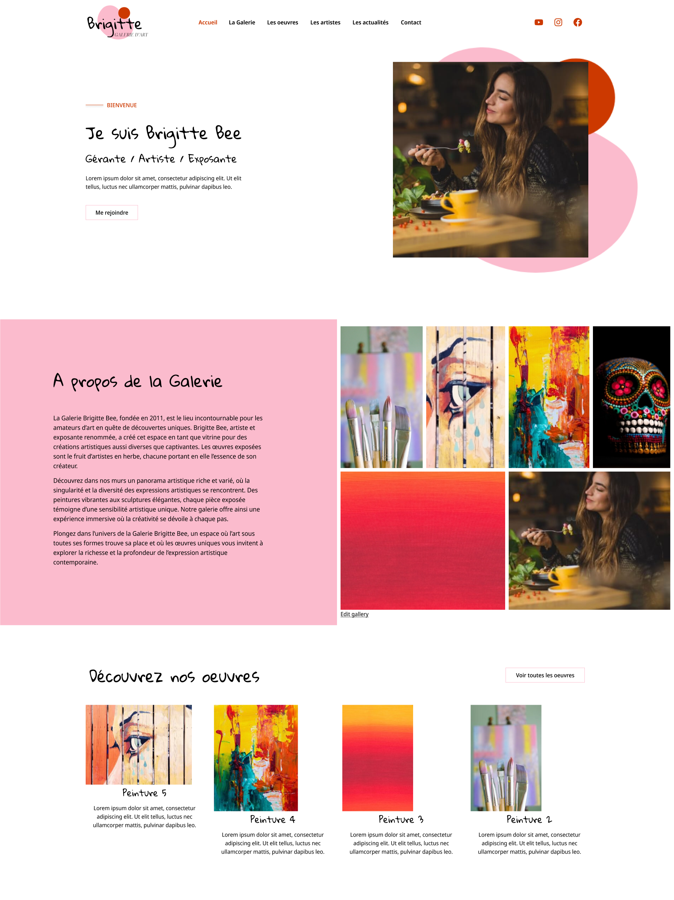
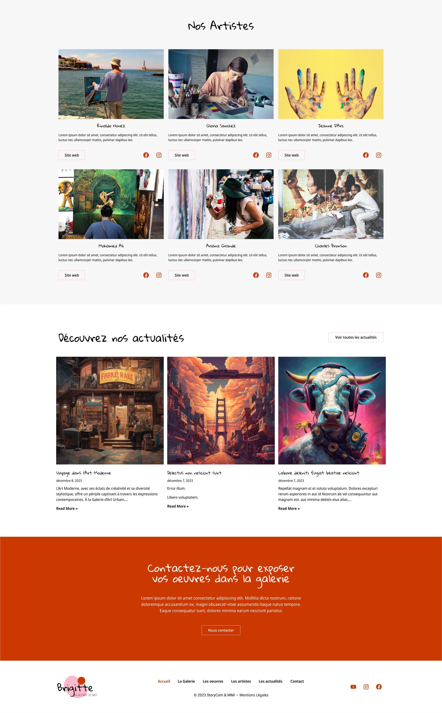
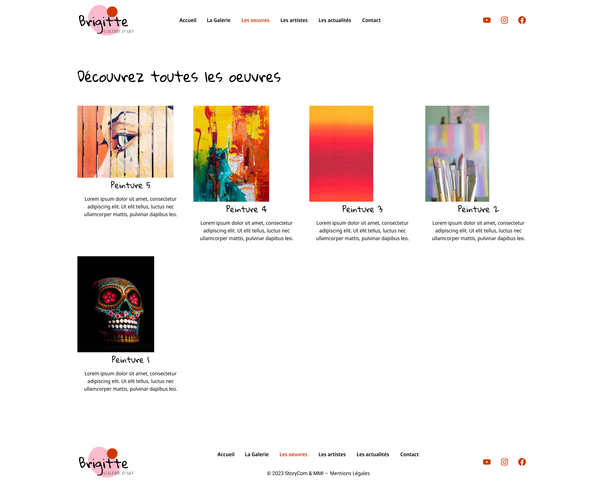
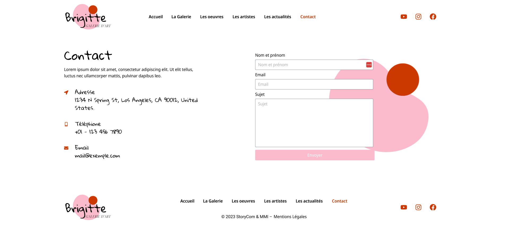

Conception d'un site web sous Wordpress.
Le but du travail était de recopier une maquette qui nous a été fournie, pour pouvoir découvrir le fonctionnement de WordPress. Ainsi, nous avons créé un site complètement fonctionnel de manière autonome, hébergé en local sur nos ordinateurs.
Effectivement, nous avons dû apprendre à exploiter un nouvel environnement de développement qui nous était complètement inconnu. Cela nous a permis de découvrir la possibilité de créer des sites internet différemment, et plus facilement.
Enfin, ce fut la première fois que nous utilisions un CMS pour développer un site internet. Il a fallu apprendre à prendre en main l'interface de Wordpress, mais aussi son fonctionnement. Il a été complexe de se retrouver parmi les nombreuses options disponibles, et de savoir comment réaliser certaines interfaces. J'ai notamment dû apprendre à utiliser les extensions disponibles.
Nous avons également la possibilité de le rendre public, en basculant l'hébergement de local vers un hébergeur.





J’ai appris à installer et à configurer WordPress dans un environnement local (AC 14.06). Ce projet m’a permis d’exploiter les fonctionnalités natives du CMS ainsi que l’installation et le paramétrage d’extensions spécifiques.
J’ai réussi à apprivoiser un environnement inconnu et à l’utiliser pour reproduire fidèlement une maquette graphique. J'ai compris l'intérêt stratégique des CMS pour gagner en rapidité de production.
Bien que l'interface ait été respectée, j'ai réalisé que l'accumulation d'extensions pouvait alourdir le site. Avec mon expérience actuelle, je chercherais davantage à personnaliser le CSS manuellement ou à modifier le code du thème enfant pour limiter l'usage de plug-ins tiers.